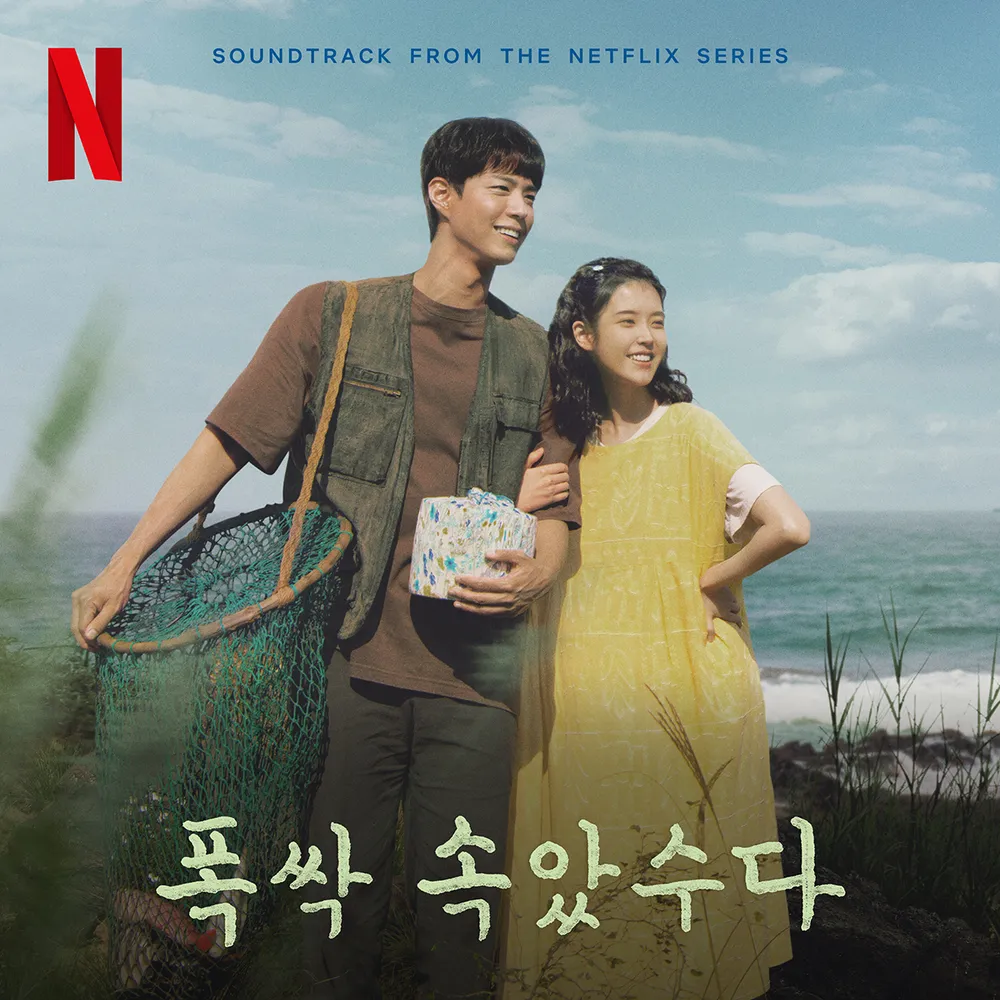
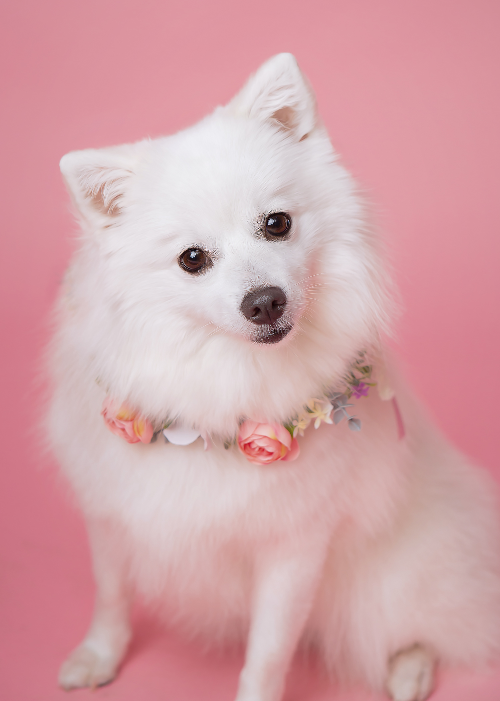
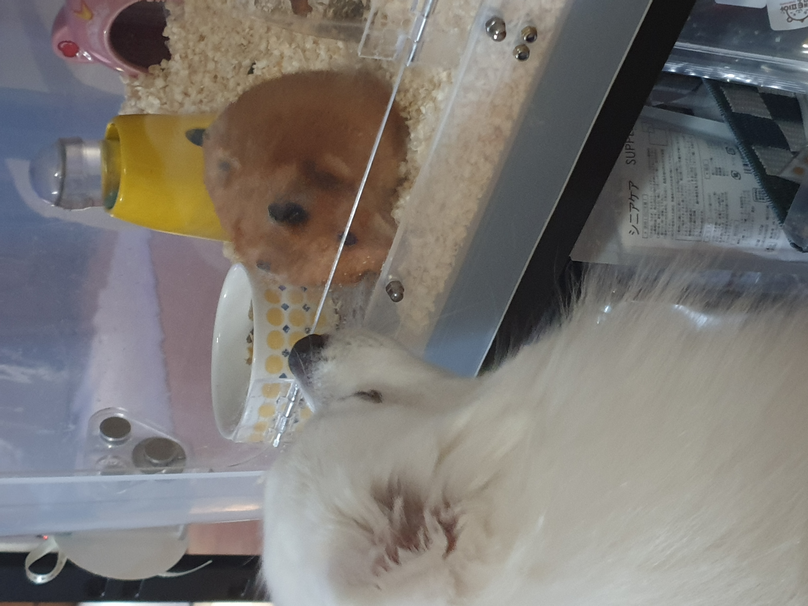
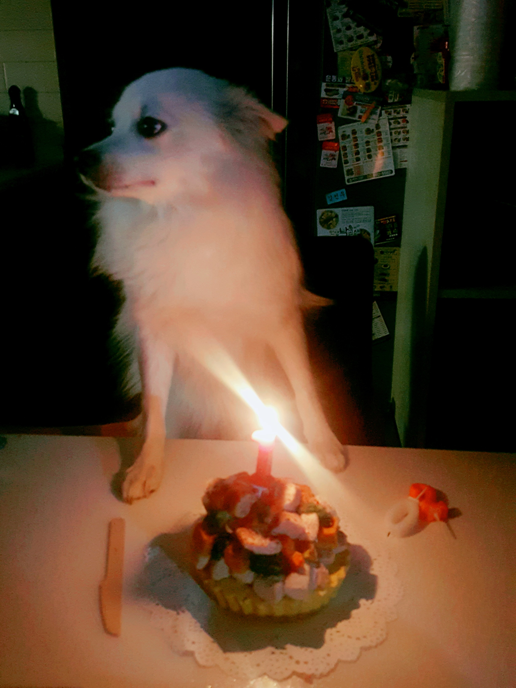
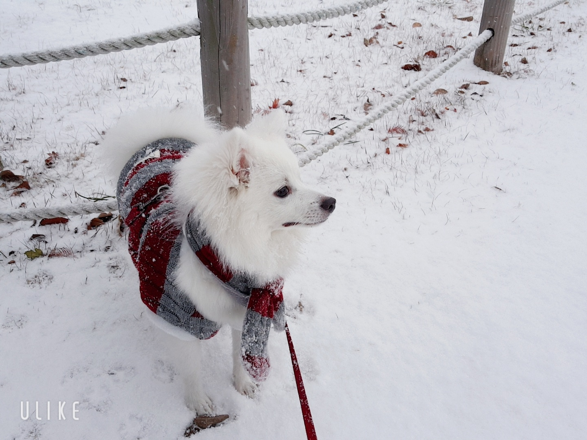
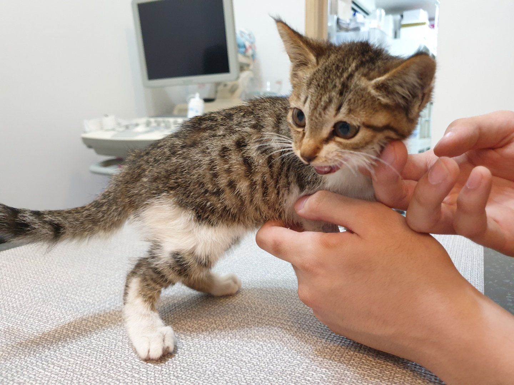
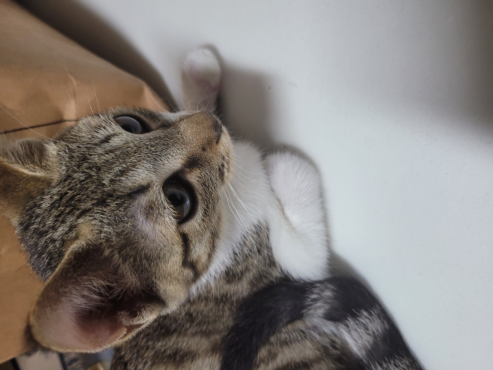
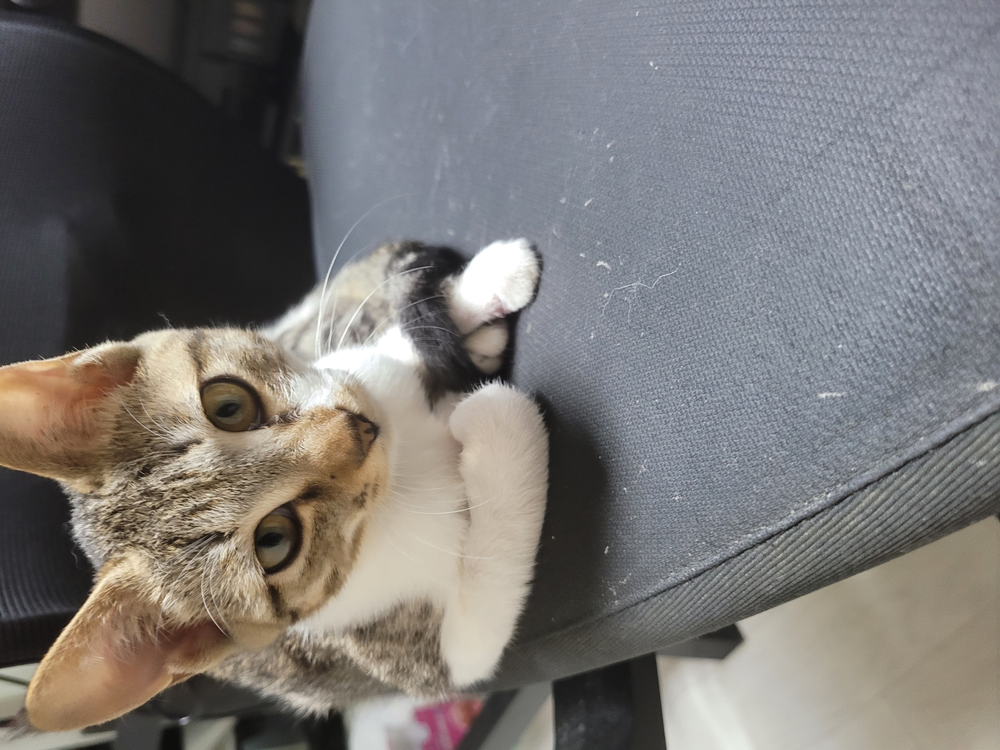
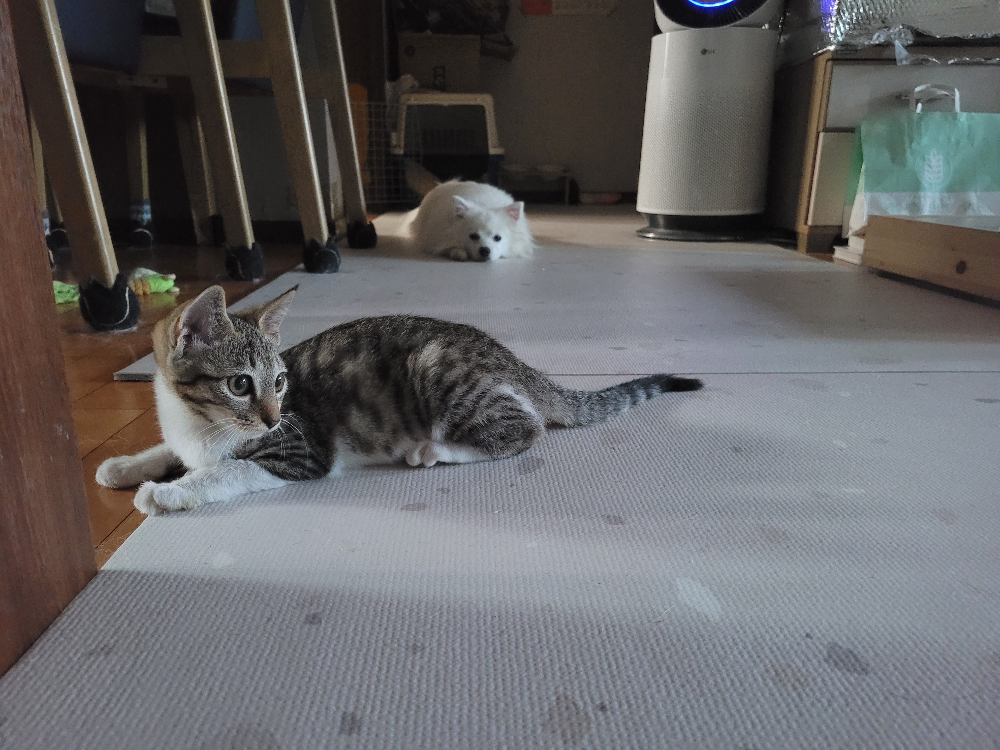
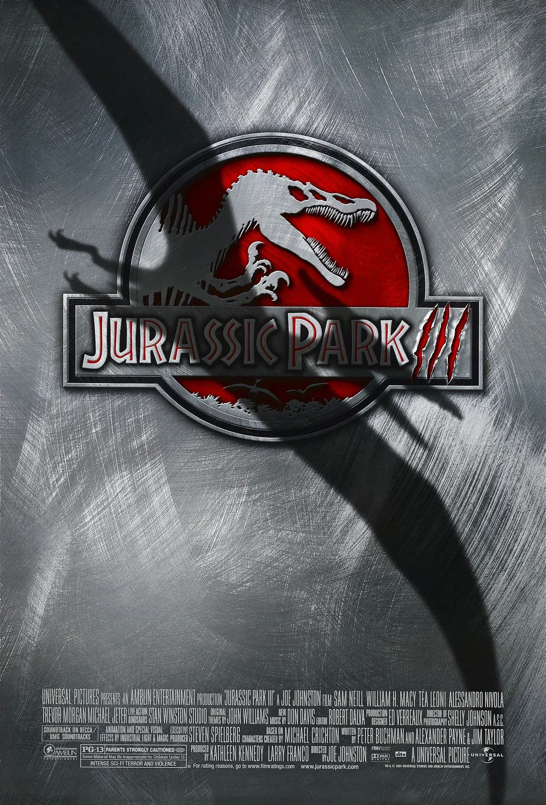

폭싹 속았수다
넷플릭스 드라마 "폭싹 속았수다"는 1950년대 제주에서 태어난 애순이와 관식이가 보낸 생애를 사계절의 흐름 속에 담아낸 작품입니다. 특히 가족에 대한 이야기를 다루는 과정에서 철없이 행동하는 자식들의 모습이 세밀하게 묘사되는데, 자식들의 모습에서 제 모습이 겹쳐 보여 많은 생각이 들었습니다.
안녕하세요~
농구랑 게임을 좋아합니다.
최근 들어 직접 하는 것 보다 보는걸 더 좋아하는 것 같네요.
LCK 토크 대환영입니다.
요즘 플리가 질려 고민인데 좋은 노래 공유해주시면 감사하겠습니다 🙇♂️
| 이름 | 김선우 |
|---|---|
| MBTI | INFJ |
| 취미 | 요리와 운동을 좋아합니다. 좋아하는 것과 잘하는 건 다른 것 같아요. 얼마전 요리하다 손을 썰었거든요.. 🥲 |
| 좋아하는 음식 | 파스타(특히 오일 파스타)를 좋아해요. 흑백요리사 보고나서는 동파육도 좋아하게 됐는데 접하긴 어렵지만 정말 맛있는 것 같아요. |
우리집 막내들을 소개합니다










넷플릭스 드라마 "폭싹 속았수다"는 1950년대 제주에서 태어난 애순이와 관식이가 보낸 생애를 사계절의 흐름 속에 담아낸 작품입니다. 특히 가족에 대한 이야기를 다루는 과정에서 철없이 행동하는 자식들의 모습이 세밀하게 묘사되는데, 자식들의 모습에서 제 모습이 겹쳐 보여 많은 생각이 들었습니다.

쥬라기 영화 시리즈를 좋아합니다 🦖 그래픽 덩어리인걸 알면서도 어릴 적 로망인 공룡은 언제봐도 즐겁더라구요. 서사와 개연성을 중요시 하는 분들에겐 비추천합니다. 생각 없이 볼 땐 아주 재밌어요. 저는 모든 영화 브금을 통틀어 쥬라기 공원의 브금을 제일 좋아합니다.
오늘 새롭게 배운 것들을 기록합니다.
header, nav, main, section, article, footer 등 시멘틱 태그의 역할과 사용법을 배웠다.